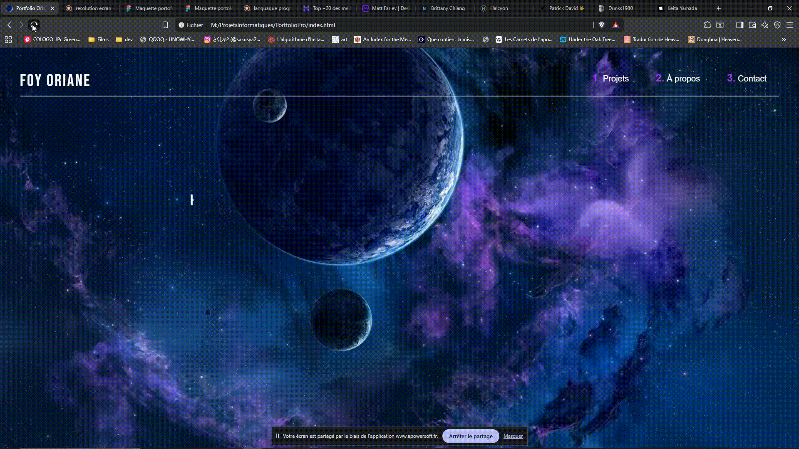

Mon portfolio

🌟 Structure simple et efficace pour une page “projet”
🏷️ 1. Titre du projet
Exemples :
“Mon Portfolio”
“Application de gestion de questionnaire PHP/MySQL”
“Jeu inspiré du métro parisien”
👉 Sois clair et concis. Le visiteur doit comprendre en une seconde de quoi il s’agit.
💡 2. Description courte (objectif du projet)
Quelques phrases max :
“Ce projet personnel m’a permis de créer un site vitrine pour me présenter et partager mes réalisations. J’ai conçu le design en HTML/CSS et ajouté quelques effets en JavaScript pour dynamiser la navigation.”
ou
“Projet réalisé dans le cadre de ma formation BTS SIO : création d’un questionnaire dynamique en PHP/MySQL avec interface d’administration.”
🧰 3. Technologies utilisées
Présente ça sous forme de petits logos ou badges :
🖥️ HTML / CSS / JavaScript
⚙️ PHP / MySQL (si utilisé)
🎨 Figma (si tu as fait une maquette)
🔧 VS Code / PhpStorm
Exemple visuel (en HTML simple) :
🖼️ 4. Captures d’écran ou gif du projet
Une image principale en haut (page d’accueil du site ou visuel clé).
Puis 2–3 petites captures de détails (formulaire, page contact, etc.).
Si tu veux : un petit avant/après ou version mobile.
💡 Astuce : ajoute une légende discrète sous chaque capture.
🔗 5. Lien vers le projet
Lien vers la version en ligne (hébergée sur GitHub Pages, Netlify, ou ton hébergeur).
Lien vers le code source GitHub.
Exemple :
🧱 6. Ce que tu as appris / difficultés rencontrées
Une mini-section personnelle :
“Ce projet m’a permis de mieux comprendre la structure d’un site web et d’utiliser les propriétés flexbox et grid en CSS. J’ai aussi appris à organiser mes fichiers et à rendre le site responsive.”
ou
“J’ai eu quelques difficultés avec l’animation JavaScript au chargement, mais ça m’a appris à manipuler le DOM.”
🌱 7. Améliorations futures (optionnel)
“Ajouter une animation d’intro plus fluide.”
“Optimiser les images pour le mobile.”
“Créer une version avec base de données.”